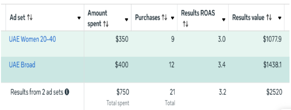

We onboard a lot of brands coming from other agencies. Almost every one of them says some version of the same thing: "I knew something was off for a while, I just didn't know exactly what to point to."
That's usually because agency underperformance doesn't show up as one dramatic failure — it shows up as a slow accumulation of small red flags that are each individually easy to explain away. Here are the seven we hear about most often, and what they actually mean.
1. You Only Get a Monthly PDF, Never Live Access
What it looks like: A polished PDF or slide deck arrives once a month with charts and a summary. You've never actually logged into Ads Manager yourself.
You should own your Business Manager and grant the agency access to it — not the reverse. If you can't log in and see your own campaigns, spend, and results in real time, you have no way to verify anything in that PDF is accurate, and you have no leverage if you ever want to switch providers.
2. The Headline Metrics Are Impressions and Reach
What it looks like: The report leads with "2.4M impressions" and "340K reach" in large bold text, with CPA and ROAS buried in a small table further down — or missing entirely.
Impressions and reach are vanity metrics for an eCommerce brand. They cost nothing to generate and say nothing about whether the account is profitable. If your agency's proudest number every month is one you can't put in a P&L, that's the tell.
3. Every Problem Is "The Algorithm" or "iOS"
What it looks like: CPA rises, and the explanation is always external — Meta changed something, privacy updates hurt tracking, the market is soft this quarter.
Some of these factors are real. But as we cover in detail in our guide to rising CPA, the seven most common causes of climbing CPA are almost all structural and fixable — creative fatigue, broken funnel structure, poor tracking, scaling too fast. An agency that never brings you a structural diagnosis, only external excuses, either doesn't know how to diagnose the account or doesn't want to do the work.
4. No New Creative Has Been Tested in 30+ Days
What it looks like: The same 2-3 ads have been running for over a month with no new concepts introduced.
As covered in our creative testing framework, fatigue sets in within 2-3 weeks for most winning ads. An agency that isn't cycling in 4-8 new concepts every two weeks is letting your account coast on borrowed time — and CPA is quietly climbing while it does.
Key Takeaway
Ask directly: "What new creative concepts have you tested in the last 30 days, and what did you learn from each?" A real answer will be specific. A vague answer is the answer.
5. You've Never Spoken to the Person Managing Your Account
What it looks like: The person who sold you the contract is charming and responsive. The person actually building your campaigns is someone you've never had a call with — junior, overloaded with dozens of other accounts, or both.
This is extremely common at larger agencies where sales and delivery are entirely separate teams. It's not automatically disqualifying, but you deserve to know who's actually making decisions in your account and to be able to ask them questions directly.
6. You're Locked Into a Long Contract
What it looks like: A 6-12 month minimum commitment with penalties for early termination.
Confident agencies work month-to-month because their retention comes from results, not contract terms. Long lock-ins are more common among agencies that expect churn — they're protecting revenue, not partnership.
7. They Can't Explain Your Account Structure When Asked
What it looks like: You ask "walk me through how our campaigns are structured — TOF, MOF, BOF, what's each one doing" and get a vague, high-level non-answer.
This is the single most revealing question you can ask. Anyone actually managing your account day-to-day should be able to answer it in under two minutes without opening a spreadsheet. If they can't, no one who understands the account is actually the one running it.

What to Look for in Your Next Agency
- You keep ownership of the Business Manager, ad account, and pixel — always. Access is granted to the agency, not the other way around.
- Month-to-month terms, or at minimum a clear, low-friction exit clause.
- Direct access to the person managing your account, not just a sales or account-management layer.
- A documented testing cadence — ask specifically how many creative concepts get tested per month.
- Reporting built around CPA, ROAS, and LTV — not impressions and reach as the headline.
Curious what your current account is actually doing right or wrong?
Book a free 15-minute audit — no obligation →Frequently Asked Questions
How do I know if my Meta Ads agency is underperforming?
Warning signs include: you only get PDF reports instead of live Ads Manager access, the headline metrics are impressions or reach instead of CPA and ROAS, no new creative has been tested in 30+ days, and they can't explain your account structure when you ask directly.
Should I have access to my own Meta Ads Manager account?
Yes, always. You should own the Business Manager and grant your agency partner access — not the other way around. If an agency insists on creating and owning the ad account themselves, that's a red flag; it makes switching agencies later far harder and puts your historical data and pixel at risk.
What should I ask a new Meta Ads agency before hiring them?
Ask who will actually be managing your account day-to-day (not just who's on the sales call), how often they test new creative, what their exact reporting cadence and format is, and whether you'll retain ownership of your ad account and pixel data if you leave.
Is a long contract normal for a Meta Ads agency?
No. Most reputable performance marketing agencies work month-to-month specifically because results should speak for themselves. Long lock-in contracts (6-12 months with penalties for early exit) are more common among agencies that expect you'd otherwise leave quickly.
The Bottom Line
None of these seven signs alone is necessarily fatal. But when two or three show up together — vague reporting, no creative testing, no direct access to the person doing the work — that's not bad luck. That's a management problem, and it's costing you CPA every day it goes unaddressed.